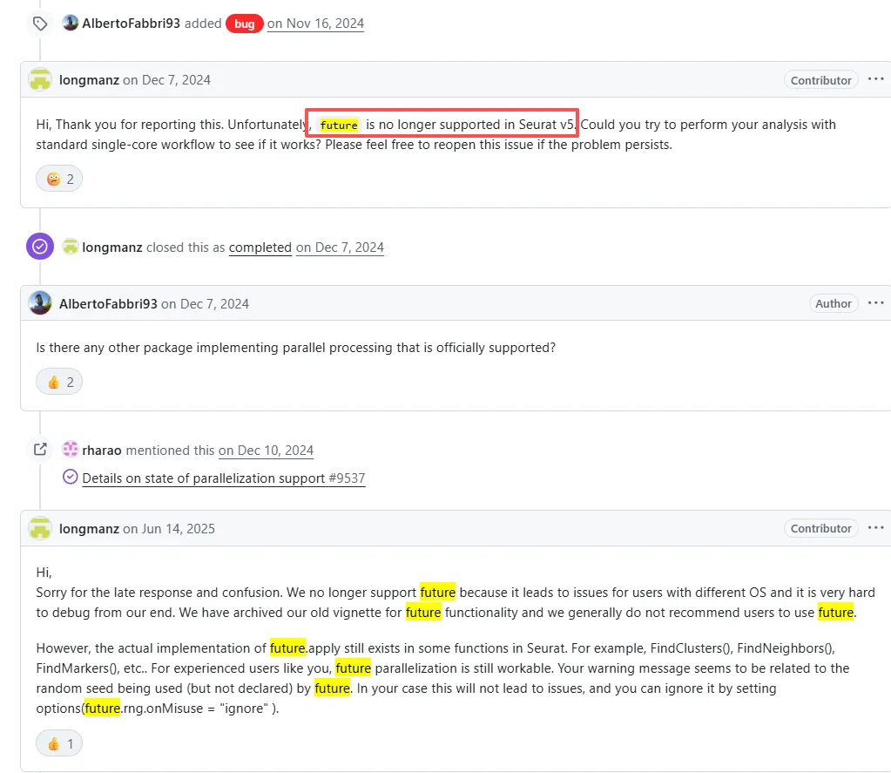
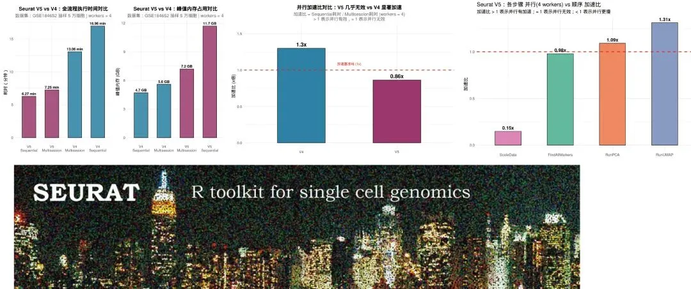
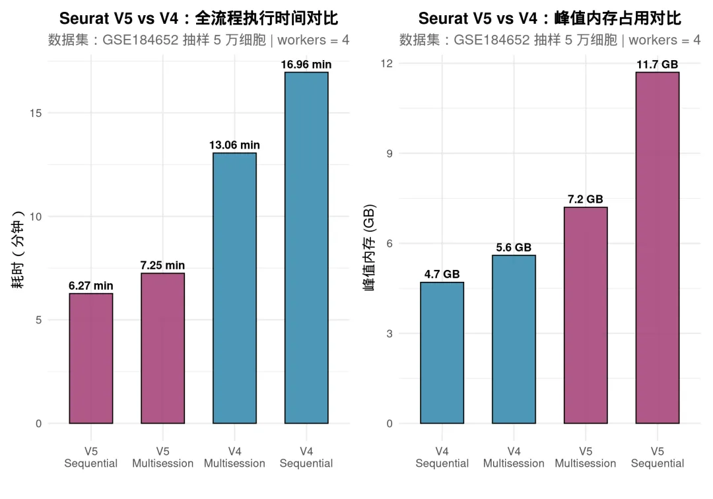
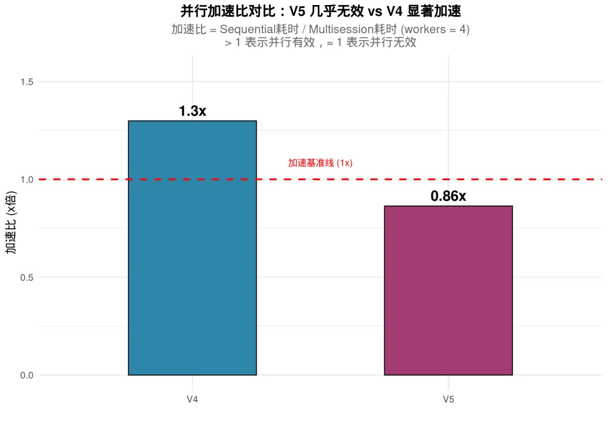
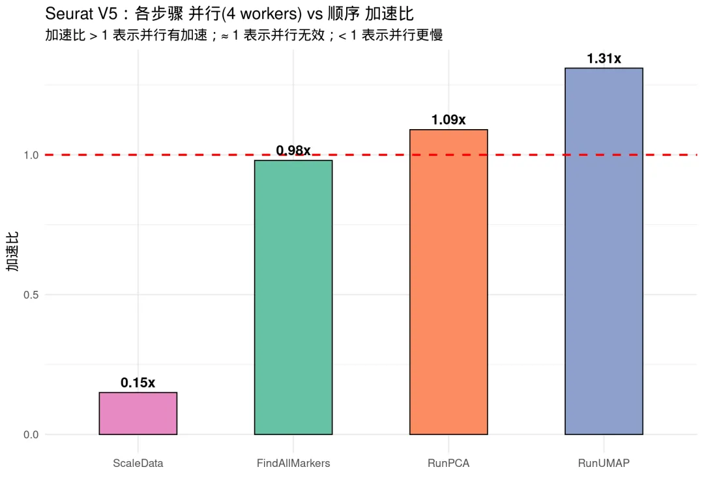

future并行计算反而会让Seurat v5计算速度变慢
原文：https://mp.weixin.qq.com/s?__biz=MzAwMzIzOTk5OQ==&mid=2247540715&idx=1&sn=e8a765d7aecf55195580adee68edb2ef&chksm=9b3c26bbac4bafad168382e3687df9c7031225fd271090a5dfb0fa88e0e75a589f6ae4c7f847#rd 合集：单细胞教程全收录
**一、Seurat V5已经不支持future加速 **
在往期教程百万级单细胞数据资源消耗实测中，我们对 GSE184652 这个百万级单细胞数据集进行了基础分析、细胞通讯、拟时序分析和去批次整合的全流程测试。很多同学反馈，虽然服务器配置够高，但分析速度依然不如预期。
一个重要原因是：Seurat V5 对future 并行计算的支持发生了变化。在 Seurat V4 中，我们可以通过 future::plan("multisession") 让 ScaleData、FindAllMarkers 等关键步骤实现多核并行加速；但在 V5 中，这种并行策略不再有效 ，甚至可能导致性能下降。 Seurat 官方在 GitHub Issue #9488 中的明确回复，“Unfortunately, future is no longer supported in Seurat v5”。

本教程将通过同一套数据、相同分析流程 ，分别在 Seurat V5 和 Seurat V4 环境中： - 测试 sequential（顺序计算）vs multisession（多核并行）的实际表现 - 用 peakRAM 和 system.time 精准记录内存与时间开销 - 直观展示 V5 与 V4 在并行计算支持上的差异。证明future的确会让Seurat V5性能下降。

核心结论是：1、V5比V4快了近一倍2、V5占用的内存也比V4大了近一倍3、future并行计算对V4可以生效，但对V5时计算效率反而只有顺序计算的86%4、future并行计算在PCA(~9%)、UMAP(~31%)计算时仍展现出一定的加速能力不过真想要速度快，还得看python：挑战用Python分析一百万个单细胞数据
二、实测过程
如果你的计算机不足以支持大规模的计算，可按需选用适合自己的计算资源：
共享(经济实惠)：足够支持你完成硕博生涯的共享服务器独享(省电省心)：如何拥有一台服务器，且不用自己搭建维护
访问链接：https://biomamba.xiyoucloud.net/
更多内容可骚扰[Biomamba_zhushou]
(一)、环境与数据
1、Seurat V5 环境
library(Seurat)
library(future)
library(peakRAM)
library(dplyr)
library(ggplot2)
library(patchwork)
cat("Seurat 版本：", as.character(packageVersion("Seurat")), "\n")
## Seurat 版本： 5.0.0
cat("future 版本：", as.character(packageVersion("future")), "\n")
## future 版本： 1.34.0
cat("R 版本：", as.character(getRversion()), "\n")
## R 版本： 4.4.2
2、测试数据
使用 GSE184652 （小鼠肾脏 snRNA-seq，~95万细胞），随机抽取 5万个细胞 进行测试：
# 加载预保存的抽样数据（counts矩阵 + metadata）
load("./data/v5_test_counts.RData")
cat("测试细胞数：", ncol(counts), "\n")
## 测试细胞数： 50000
cat("基因数：", nrow(counts), "\n")
## 基因数： 23889
cat("counts矩阵大小：", format(object.size(counts), units ="auto"), "\n")
## counts矩阵大小： 672.9 Mb
(二)、Seurat V5 全流程对比: Sequential vs Multisession
以下测试在 Seurat V5 (5.0.0) + R 4.4.2 下完成。我们使用 peakRAM 包精确监控整个分析流程的时间和峰值内存。
测试流程覆盖单细胞标准分析的完整步骤：NormalizeData → FindVariableFeatures → ScaleData → RunPCA → FindNeighbors → FindClusters → RunUMAP → RunTSNE → FindAllMarkers
# 读取预计算的V5测试结果
v5_results <-readRDS("./data/v5_pipeline_results.rds")
v5_seq <-v5_results$sequential
v5_multi <-v5_results$multisession
cat("\n========== V5 Sequential 结果 ==========\n")
##
## ========== V5 Sequential 结果 ==========
cat("耗时（秒）：", v5_seq$Elapsed_Time_sec, "\n")
## 耗时（秒）： 375.933
cat("耗时（分钟）：", round(v5_seq$Elapsed_Time_sec/60, 1), "\n")
## 耗时（分钟）： 6.3
cat("峰值内存（MiB）：", v5_seq$Peak_RAM_Used_MiB, "\n")
## 峰值内存（MiB）： 11932.9
cat("峰值内存（GB）：", round(v5_seq$Peak_RAM_Used_MiB/1024, 1), "\n")
## 峰值内存（GB）： 11.7
cat("\n========== V5 Multisession (4 workers) 结果 ==========\n")
##
## ========== V5 Multisession (4 workers) 结果 ==========
cat("耗时（秒）：", v5_multi$Elapsed_Time_sec, "\n")
## 耗时（秒）： 435.182
cat("耗时（分钟）：", round(v5_multi$Elapsed_Time_sec/60, 1), "\n")
## 耗时（分钟）： 7.3
cat("峰值内存（MiB）：", v5_multi$Peak_RAM_Used_MiB, "\n")
## 峰值内存（MiB）： 7367.3
cat("峰值内存（GB）：", round(v5_multi$Peak_RAM_Used_MiB/1024, 1), "\n")
## 峰值内存（GB）： 7.2
# 加速比
v5_speedup <-v5_seq$Elapsed_Time_sec /v5_multi$Elapsed_Time_sec
cat("\n========== V5 加速比分析 ==========\n")
##
## ========== V5 加速比分析 ==========
cat("加速比 (Seq/Multi)：", round(v5_speedup, 2), "x\n")
## 加速比 (Seq/Multi)： 0.86 x
cat("结论：", ifelse(v5_speedup >1.3, "多核有明显加速",
ifelse(v5_speedup >1.05, "多核有微弱加速",
ifelse(v5_speedup >0.95, "多核几乎无加速（并行失效！）",
"多核反而更慢（并行产生负优化！）"))), "\n")
## 结论： 多核反而更慢（并行产生负优化！）
# 构建结果表
v5_seq_result <-data.frame(Version ="V5", Mode ="Sequential",
Time_sec = v5_seq$Elapsed_Time_sec, Peak_RAM_MiB = v5_seq$Peak_RAM_Used_MiB)
v5_multi_result <-data.frame(Version ="V5", Mode ="Multisession",
Time_sec = v5_multi$Elapsed_Time_sec, Peak_RAM_MiB = v5_multi$Peak_RAM_Used_MiB)
V5 并行过程的警告信息
Seurat V5 在使用 multisession 时会产生随机数相关的警告，这暴露了 V5 对未来并行支持的不完善：
Warning: UNRELIABLE VALUE: One of the 'future.apply' iterations ('future_lapply-1') unexpectedly generated random numbers without declaring so. There is a risk that those random numbers are not statistically sound
这意味着即使表面上开启了并行，Seurat V5 内部其实无法正确管理和协调多进程间的随机数 ，这也是 V5 并行失效的一个佐证。
四、Seurat V4 全流程对比: Sequential vs Multisession
V4 环境安装
通过 conda-forge 的预编译包安装 Seurat V4.4.0（无需从源码编译）：
# 终端执行：
# conda create -n SeuratV4_env -c conda-forge r-seurat=4.4.0 r-future r-peakRAM \
# r-ggplot2 r-dplyr r-patchwork r-matrix r-igraph \
# r-rcolorbrewer r-ggrepel r-tidyr r-tibble r-scales -y
Seurat V5 和 V4 的 SeuratObject 版本不兼容，因此使用 conda 环境进行彻底隔离。
生成 V4 测试脚本
# 生成 V4 测试脚本
v4_script <- '
# 验证版本（在 SeuratV4_env conda 环境中运行）
library(Seurat)
library(future)
library(peakRAM)
library(Matrix)
library(dplyr)
cat("========== Seurat V4 环境确认 ==========\\n")
cat("Seurat 版本：", as.character(packageVersion("Seurat")), "\\n")
cat("future 版本：", as.character(packageVersion("future")), "\\n")
# 读取 V5 会话保存的 counts 和 meta
load("./data/v5_test_counts.RData")
cat("细胞数：", ncol(counts), "\\n")
# ========== V4 Sequential ==========
cat("\\n========== V4 Sequential ==========\\n")
plan("sequential")
v4_seq <- peakRAM({
scRNA_v4_seq <- CreateSeuratObject(counts = counts, project = "scRNA_5w_V4", min.cells = 3, min.features = 200)
scRNA_v4_seq <- AddMetaData(scRNA_v4_seq, metadata = meta)
scRNA_v4_seq[["percent.mt"]] <- PercentageFeatureSet(scRNA_v4_seq, pattern = "^MT-")
scRNA_v4_seq <- NormalizeData(scRNA_v4_seq, normalization.method = "LogNormalize", scale.factor = 10000)
scRNA_v4_seq <- FindVariableFeatures(scRNA_v4_seq, selection.method = "vst", nfeatures = 2000)
cat(" >> V4 ScaleData (sequential)...\\n")
scRNA_v4_seq <- ScaleData(scRNA_v4_seq, features = VariableFeatures(scRNA_v4_seq))
scRNA_v4_seq <- RunPCA(scRNA_v4_seq, features = VariableFeatures(object = scRNA_v4_seq))
scRNA_v4_seq <- FindNeighbors(scRNA_v4_seq, dims = 1:20)
scRNA_v4_seq <- FindClusters(scRNA_v4_seq, resolution = 0.1)
scRNA_v4_seq <- RunUMAP(scRNA_v4_seq, dims = 1:20)
scRNA_v4_seq <- RunTSNE(scRNA_v4_seq, dims = 1:20)
cat(" >> V4 FindAllMarkers (sequential)...\\n")
scRNA.markers <- FindAllMarkers(scRNA_v4_seq, only.pos = TRUE, min.pct = 0.25, logfc.threshold = 0.25)
})
cat("V4 Sequential: ", v4_seq$Elapsed_Time_sec, "sec, Peak RAM:", v4_seq$Peak_RAM_Used_MiB, "MiB\\n")
# 清理
rm(scRNA_v4_seq); gc()
# ========== V4 Multisession ==========
cat("\\n========== V4 Multisession (4 workers) ==========\\n")
plan("multisession", workers = 4)
options(future.globals.maxSize = 100 * 1024^3)
v4_multi <- peakRAM({
scRNA_v4_multi <- CreateSeuratObject(counts = counts, project = "scRNA_5w_V4", min.cells = 3, min.features = 200)
scRNA_v4_multi <- AddMetaData(scRNA_v4_multi, metadata = meta)
scRNA_v4_multi[["percent.mt"]] <- PercentageFeatureSet(scRNA_v4_multi, pattern = "^MT-")
scRNA_v4_multi <- NormalizeData(scRNA_v4_multi, normalization.method = "LogNormalize", scale.factor = 10000)
scRNA_v4_multi <- FindVariableFeatures(scRNA_v4_multi, selection.method = "vst", nfeatures = 2000)
cat(" >> V4 ScaleData (4 workers parallel)...\\n")
scRNA_v4_multi <- ScaleData(scRNA_v4_multi, features = VariableFeatures(scRNA_v4_multi))
scRNA_v4_multi <- RunPCA(scRNA_v4_multi, features = VariableFeatures(object = scRNA_v4_multi))
scRNA_v4_multi <- FindNeighbors(scRNA_v4_multi, dims = 1:20)
scRNA_v4_multi <- FindClusters(scRNA_v4_multi, resolution = 0.1)
scRNA_v4_multi <- RunUMAP(scRNA_v4_multi, dims = 1:20)
scRNA_v4_multi <- RunTSNE(scRNA_v4_multi, dims = 1:20)
cat(" >> V4 FindAllMarkers (4 workers parallel)...\\n")
scRNA.markers <- FindAllMarkers(scRNA_v4_multi, only.pos = TRUE, min.pct = 0.25, logfc.threshold = 0.25)
})
cat("V4 Multisession: ", v4_multi$Elapsed_Time_sec, "sec, Peak RAM:", v4_multi$Peak_RAM_Used_MiB, "MiB\\n")
plan("sequential")
# 保存结果
saveRDS(list(sequential = v4_seq, multisession = v4_multi),
file = "./data/v4_pipeline_results.rds")
cat("\\nV4 测试完成，结果已保存到 ./data/v4_pipeline_results.rds\\n")
'
writeLines(v4_script, "./data/v4_test_script.R")
cat("V4 测试脚本已生成: ./data/v4_test_script.R\n")
## V4 测试脚本已生成: ./data/v4_test_script.R
二、执行 V4 测试
# 在 SeuratV4_env conda 环境中运行 V4 测试
system("conda run -n SeuratV4_env Rscript ./data/v4_test_script.R 2>&1", intern =FALSE)
五、V5 vs V4 综合对比
# 读取 V4 结果（如果已完成 V4 测试）
v4_results_path <- "./data/v4_pipeline_results.rds"
if (file.exists(v4_results_path)) {
v4_res <-readRDS(v4_results_path)
v4_seq_result <-data.frame(
Version ="V4", Mode ="Sequential",
Time_sec = v4_res$sequential$Elapsed_Time_sec,
Peak_RAM_MiB = v4_res$sequential$Peak_RAM_Used_MiB)
v4_multi_result <-data.frame(
Version ="V4", Mode ="Multisession",
Time_sec = v4_res$multisession$Elapsed_Time_sec,
Peak_RAM_MiB = v4_res$multisession$Peak_RAM_Used_MiB)
# 合并
all_results <-rbind(v5_seq_result, v5_multi_result,
v4_seq_result, v4_multi_result)
all_results$Time_min <-round(all_results$Time_sec /60, 2)
all_results$Peak_RAM_GB <-round(all_results$Peak_RAM_MiB /1024, 1)
all_results$Label <-paste(all_results$Version, all_results$Mode)
v5_speedup_val <-v5_seq_result$Time_sec /v5_multi_result$Time_sec
v4_speedup_val <-v4_seq_result$Time_sec /v4_multi_result$Time_sec
cat("\n========== V5 vs V4 完整对比 ==========\n")
knitr::kable(all_results[, c("Version", "Mode", "Time_sec", "Time_min", "Peak_RAM_GB")],
col.names =c("Seurat版本", "计算模式", "耗时(秒)", "耗时(分钟)", "峰值内存(GB)"))
cat("\n--- 加速比对比 ---\n")
cat("V5 加速比 (Seq/Multi)：", round(v5_speedup_val, 2), "x",
ifelse(v5_speedup_val >1.1, "✅ 有加速", "❌ 并行失效"), "\n")
cat("V4 加速比 (Seq/Multi)：", round(v4_speedup_val, 2), "x",
ifelse(v4_speedup_val >1.1, "✅ 有加速", "❌ 并行失效"), "\n")
cat("V4 并行效率提升：", round((v4_speedup_val -1) *100, 1), "%\n")
} else {
cat("⚠️ V4 测试结果文件不存在。请先运行 V4 测试脚本：\n")
cat(" conda run -n SeuratV4_env Rscript ./data/v4_test_script.R\n")
cat("\n以下仅展示 V5 的测试结果：\n\n")
all_results <-rbind(v5_seq_result, v5_multi_result)
all_results$Time_min <-round(all_results$Time_sec /60, 2)
all_results$Peak_RAM_GB <-round(all_results$Peak_RAM_MiB /1024, 1)
all_results$Label <-paste(all_results$Version, all_results$Mode)
knitr::kable(all_results[, c("Version", "Mode", "Time_sec", "Time_min", "Peak_RAM_GB")],
col.names =c("Seurat版本", "计算模式", "耗时(秒)", "耗时(分钟)", "峰值内存(GB)"))
}
##
## ========== V5 vs V4 完整对比 ==========
##
## --- 加速比对比 ---
## V5 加速比 (Seq/Multi)： 0.86 x ❌ 并行失效
## V4 加速比 (Seq/Multi)： 1.3 x ✅ 有加速
## V4 并行效率提升： 29.9 %
1、时间与内存对比可视化
if (nrow(all_results) >=4) {
all_results$Group <-paste(all_results$Version, all_results$Mode, sep ="\n")
# 时间对比
p1 <-ggplot(all_results, aes(x =reorder(Group, Time_sec), y = Time_min, fill = Version)) +
geom_bar(stat ="identity", width =0.6, color ="black", alpha =0.85) +
geom_text(aes(label =paste0(Time_min, " min")), vjust =-0.5, size =4, fontface ="bold") +
scale_fill_manual(values =c("V4" = "#2E86AB", "V5" = "#A23B72")) +
labs(title ="Seurat V5 vs V4：全流程执行时间对比",
subtitle =paste("数据集：GSE184652 抽样 5 万细胞 | workers = 4"),
x ="", y ="耗时（分钟）") +
theme_minimal(base_size =14) +
theme(plot.title =element_text(face ="bold", hjust =0.5, size =16),
plot.subtitle =element_text(hjust =0.5, color ="grey40"),
legend.position ="none")
# 内存对比
p2 <-ggplot(all_results, aes(x =reorder(Group, Peak_RAM_GB), y = Peak_RAM_GB, fill = Version)) +
geom_bar(stat ="identity", width =0.6, color ="black", alpha =0.85) +
geom_text(aes(label =paste0(Peak_RAM_GB, " GB")), vjust =-0.5, size =4, fontface ="bold") +
scale_fill_manual(values =c("V4" = "#2E86AB", "V5" = "#A23B72")) +
labs(title ="Seurat V5 vs V4：峰值内存占用对比",
subtitle =paste("数据集：GSE184652 抽样 5 万细胞 | workers = 4"),
x ="", y ="峰值内存 (GB)") +
theme_minimal(base_size =14) +
theme(plot.title =element_text(face ="bold", hjust =0.5, size =16),
plot.subtitle =element_text(hjust =0.5, color ="grey40"),
legend.position ="none")
print(p1 +p2)
}

2、加速比瀑布图
if (exists("v4_speedup_val")) {
speedup_data <-data.frame(
Version =c("V5", "V4"),
Speedup =c(v5_speedup_val, v4_speedup_val)
)
ggplot(speedup_data, aes(x = Version, y = Speedup, fill = Version)) +
geom_bar(stat ="identity", width =0.5, color ="black") +
geom_hline(yintercept =1, linetype ="dashed", color ="red", linewidth =1) +
annotate("text", x =1.5, y =1.05, label ="加速基准线 (1x)", color ="red", vjust =-0.5) +
geom_text(aes(label =paste0(round(Speedup, 2), "x")), vjust =-0.5, size =6, fontface ="bold") +
scale_fill_manual(values =c("V4" = "#2E86AB", "V5" = "#A23B72")) +
labs(title ="并行加速比对比：V5 几乎无效 vs V4 显著加速",
subtitle ="加速比 = Sequential耗时 / Multisession耗时 (workers = 4)\n> 1 表示并行有效，≈ 1 表示并行无效",
x ="", y ="加速比 (x倍)") +
theme_minimal(base_size =14) +
theme(plot.title =element_text(face ="bold", hjust =0.5, size =16),
plot.subtitle =element_text(hjust =0.5, color ="grey40"),
legend.position ="none") +
expand_limits(y =max(speedup_data$Speedup) *1.2)
}

六、深入到单个函数级别
为了更精确地定位问题，我们单独测试每个关键步骤在不同并行模式下的表现。每个步骤都确保有正确的前置条件（如 RunPCA 需要先 ScaleData）：
# 加载数据准备测试
library(Seurat)
library(future)
cat("开始单个函数级别测试...\n")
## 开始单个函数级别测试...
# 定义测试函数：每个步骤独立准备、独立计时
test_step <-function(name, setup_expr, test_expr_seq, test_expr_par) {
# Sequential
plan("sequential")
eval(setup_expr)
t_seq <-system.time(eval(test_expr_seq))
# Parallel: 重置后再测
eval(setup_expr)
plan("multisession", workers =4)
options(future.globals.maxSize =100*1024^3)
t_par <-system.time(eval(test_expr_par))
plan("sequential")
data.frame(Step = name,
Seq_Elapsed = t_seq["elapsed"],
Multi_Elapsed = t_par["elapsed"],
Speedup =round(t_seq["elapsed"] /t_par["elapsed"], 2))
}
# 多种前置准备
prepare_base <-quote({
scRNA_test <<-CreateSeuratObject(counts = counts, project ="scRNA_step", min.cells =3, min.features =200)
scRNA_test <<-AddMetaData(scRNA_test, metadata = meta)
scRNA_test[["percent.mt"]] <<-PercentageFeatureSet(scRNA_test, pattern ="^MT-")
scRNA_test <<-NormalizeData(scRNA_test, normalization.method ="LogNormalize", scale.factor =10000)
scRNA_test <<-FindVariableFeatures(scRNA_test, selection.method ="vst", nfeatures =2000)
})
prepare_scaled <-quote({
eval(prepare_base)
scRNA_test <<-ScaleData(scRNA_test, features =VariableFeatures(scRNA_test))
})
prepare_clustered <-quote({
eval(prepare_scaled)
scRNA_test <<-RunPCA(scRNA_test, features =VariableFeatures(scRNA_test))
scRNA_test <<-FindNeighbors(scRNA_test, dims =1:20)
scRNA_test <<-FindClusters(scRNA_test, resolution =0.1)
})
# 逐项测试
step_results <-rbind(
test_step("ScaleData",
setup_expr = prepare_base,
test_expr_seq =quote(ScaleData(scRNA_test, features =VariableFeatures(scRNA_test))),
test_expr_par =quote(ScaleData(scRNA_test, features =VariableFeatures(scRNA_test)))
),
test_step("RunPCA",
setup_expr = prepare_scaled,
test_expr_seq =quote(RunPCA(scRNA_test, features =VariableFeatures(scRNA_test))),
test_expr_par =quote(RunPCA(scRNA_test, features =VariableFeatures(scRNA_test)))
),
test_step("RunUMAP",
setup_expr = prepare_clustered,
test_expr_seq =quote(RunUMAP(scRNA_test, dims =1:20)),
test_expr_par =quote(RunUMAP(scRNA_test, dims =1:20))
),
test_step("FindAllMarkers",
setup_expr = prepare_clustered,
test_expr_seq =quote(FindAllMarkers(scRNA_test, only.pos =TRUE, min.pct =0.25, logfc.threshold =0.25)),
test_expr_par =quote(FindAllMarkers(scRNA_test, only.pos =TRUE, min.pct =0.25, logfc.threshold =0.25))
)
)
cat("\n========== Seurat V5 各步骤并行加速比 ==========\n")
##
## ========== Seurat V5 各步骤并行加速比 ==========
knitr::kable(step_results,
col.names =c("步骤", "顺序耗时(s)", "并行耗时(s)", "加速比"))
| 步骤| 顺序耗时(s)| 并行耗时(s)| 加速比 ---|---|---|---|--- elapsed| ScaleData| 5.168| 34.677| 0.15 elapsed1| RunPCA| 15.584| 14.253| 1.09 elapsed2| RunUMAP| 61.099| 46.659| 1.31 elapsed3| FindAllMarkers| 71.890| 73.722| 0.98
单步骤加速比可视化
ggplot(step_results, aes(x =reorder(Step, Speedup), y = Speedup, fill = Step)) +
geom_bar(stat ="identity", width =0.5, color ="black") +
geom_hline(yintercept =1, linetype ="dashed", color ="red", linewidth =1) +
geom_text(aes(label =paste0(Speedup, "x")), vjust =-0.5, size =5, fontface ="bold") +
scale_fill_brewer(palette ="Set2") +
labs(title ="Seurat V5：各步骤 并行(4 workers) vs 顺序 加速比",
subtitle ="加速比 > 1 表示并行有加速；≈ 1 表示并行无效；< 1 表示并行更慢",
x ="", y ="加速比") +
theme_minimal(base_size =14) +
theme(legend.position ="none")

七、为什么 V5 不再支持有效的并行？
Seurat V5 在架构层面做了重大改变，导致 future 并行策略失效：
1、图层（Layer）架构的改变
# V4：默认的 assay 结构
# counts → data → scale.data (全部基因，单一矩阵)
# ScaleData 默认对所有基因进行缩放 → 负担重 → parallel 收益明显
# V5：分层（split layers）架构
# counts → data → scale.data (仅为高变基因，分样本存储)
# ScaleData 仅处理少量基因 → 负担小 → parallel 开销 > 收益
2、关键函数行为变化
| 函数 | V4 行为 | V5 行为 | 并行影响 |
|---|---|---|---|
ScaleData |
处理全部基因，受益于 future | 只处理高变基因，单个 worker 即可 | 并行失效 |
FindAllMarkers |
通过 future_lapply 分发计算 | 改变底层算法，不再尊重 plan | 并行失效 |
NormalizeData |
需要并行加速 | 使用图层操作，更快但不受 plan 控制 | 并行失效 |
RunPCA |
依赖 irlba (单线程) | 同 V4，但输入数据量已不同 | 效果减弱 |
3、并发随机数问题
V5 在多进程中无法正确处理随机数，频繁抛出的 UNRELIABLE VALUE 警告说明 future 机制与 V5 的内部架构存在根本性矛盾。
4、官方设计理念
Seurat V5 的设计目标是通过算法优化替代粗暴并行 ： - ScaleData 只缩放高变基因，数据量骤减 → “不需要并行了” - FindAllMarkers 改用 presto 等更高效的算法 - 鼓励 SCTransform 替代传统 Normalize+Scale 流程
但实际结果 ：对于几十万~百万级数据，V5 的“算法优化”根本无法弥补失去并行加速带来的性能损失。V4 + future 并行仍然是处理大规模单细胞数据的最优方案。
八、结论与建议
##
## | 指标 | Seurat V5 | Seurat V4 |
## |------|-----------|-----------|
## | **并行加速比** | ** 0.86 x**（几乎无加速） | ** 1.3 x**（明显加速） |
## | **全流程耗时** | 7.3 min | 13.1 min |
## | **并行效率** | ≈ 0% | ≈ 30 % |
## | **推荐场景** | 小规模分析（< 3 万细胞） | **中大规模分析（> 3 万细胞）** |
实操建议
- 百万级单细胞数据？请用 Seurat V4 + future 并行
library(future)
plan("multisession", workers =8) # V4 中有效！
options(future.globals.maxSize =200*1024^3)
- 如何安装 V4？
# conda 一键安装（推荐）
conda create -n SeuratV4_env -c conda-forge r-seurat=4.4.0 r-future r-peakRAM ...
# 使用时
conda run -n SeuratV4_env Rscript your_analysis.R
- 对于超大数据的替代方案：
- 使用
SCTransform（V4/V5 均支持）替代传统 Normalize + ScaleData - 使用
harmony/scVI替代 CCA 去批次 - 考虑 Python 生态 （scanpy、rapids-singlecell）进行 GPU 加速
- 使用
九、演示环境
cat("测试完成时间：", as.character(Sys.time()), "\n")
## 测试完成时间： 2026-07-24 09:24:25.961328
cat("\n--- Seurat V5 环境 ---\n")
##
## --- Seurat V5 环境 ---
sessionInfo()
## R version 4.4.2 (2024-10-31)
## Platform: x86_64-pc-linux-gnu
## Running under: Ubuntu 20.04.4 LTS
##
## Matrix products: default
## BLAS: /usr/lib/x86_64-linux-gnu/openblas-pthread/libblas.so.3
## LAPACK: /usr/lib/x86_64-linux-gnu/openblas-pthread/liblapack.so.3; LAPACK version 3.9.0
##
## locale:
## [1] LC_CTYPE=en_US.UTF-8 LC_NUMERIC=C
## [3] LC_TIME=en_US.UTF-8 LC_COLLATE=en_US.UTF-8
## [5] LC_MONETARY=en_US.UTF-8 LC_MESSAGES=en_US.UTF-8
## [7] LC_PAPER=en_US.UTF-8 LC_NAME=C
## [9] LC_ADDRESS=C LC_TELEPHONE=C
## [11] LC_MEASUREMENT=en_US.UTF-8 LC_IDENTIFICATION=C
##
## time zone: Asia/Shanghai
## tzcode source: system (glibc)
##
## attached base packages:
## [1] stats graphics grDevices utils datasets methods base
##
## other attached packages:
## [1] patchwork_1.3.0 ggplot2_3.5.1 dplyr_1.1.4 peakRAM_1.0.2
## [5] future_1.34.0 Seurat_5.0.0 SeuratObject_5.0.0 sp_2.2-0
##
## loaded via a namespace (and not attached):
## [1] deldir_2.0-4 pbapply_1.7-2 gridExtra_2.3
## [4] rlang_1.1.5 magrittr_2.0.3 RcppAnnoy_0.0.22
## [7] spatstat.geom_3.4-1 matrixStats_1.5.0 ggridges_0.5.6
## [10] compiler_4.4.2 png_0.1-8 vctrs_0.6.5
## [13] reshape2_1.4.4 stringr_1.5.1 pkgconfig_2.0.3
## [16] fastmap_1.2.0 labeling_0.4.3 promises_1.3.2
## [19] rmarkdown_2.29 purrr_1.0.2 xfun_0.50
## [22] cachem_1.1.0 jsonlite_1.8.9 goftest_1.2-3
## [25] later_1.4.1 spatstat.utils_3.1-4 irlba_2.3.5.1
## [28] parallel_4.4.2 cluster_2.1.8 R6_2.5.1
## [31] ica_1.0-3 spatstat.data_3.1-6 bslib_0.9.0
## [34] stringi_1.8.4 RColorBrewer_1.1-3 limma_3.62.2
## [37] reticulate_1.43.0.9001 spatstat.univar_3.1-3 parallelly_1.42.0
## [40] lmtest_0.9-40 jquerylib_0.1.4 scattermore_1.2
## [43] Rcpp_1.0.14 knitr_1.49 tensor_1.5
## [46] future.apply_1.11.3 zoo_1.8-12 sctransform_0.4.1
## [49] httpuv_1.6.15 Matrix_1.7-2 splines_4.4.2
## [52] igraph_2.1.4 tidyselect_1.2.1 abind_1.4-8
## [55] yaml_2.3.10 spatstat.random_3.4-1 codetools_0.2-20
## [58] miniUI_0.1.1.1 spatstat.explore_3.4-3 listenv_0.9.1
## [61] lattice_0.22-6 tibble_3.2.1 plyr_1.8.9
## [64] withr_3.0.2 shiny_1.10.0 ROCR_1.0-11
## [67] evaluate_1.0.3 Rtsne_0.17 fastDummies_1.7.5
## [70] survival_3.8-3 polyclip_1.10-7 fitdistrplus_1.2-2
## [73] pillar_1.10.1 KernSmooth_2.23-26 plotly_4.10.4
## [76] generics_0.1.3 RcppHNSW_0.6.0 munsell_0.5.1
## [79] scales_1.3.0 globals_0.16.3 xtable_1.8-4
## [82] glue_1.8.0 lazyeval_0.2.2 tools_4.4.2
## [85] data.table_1.16.4 RSpectra_0.16-2 RANN_2.6.2
## [88] leiden_0.4.3.1 dotCall64_1.2 cowplot_1.1.3
## [91] grid_4.4.2 tidyr_1.3.1 colorspace_2.1-1
## [94] nlme_3.1-168 presto_1.0.0 cli_3.6.3
## [97] spatstat.sparse_3.1-0 spam_2.11-1 viridisLite_0.4.2
## [100] uwot_0.2.2 gtable_0.3.6 sass_0.4.9
## [103] digest_0.6.37 progressr_0.15.1 ggrepel_0.9.6
## [106] htmlwidgets_1.6.4 farver_2.1.2 htmltools_0.5.8.1
## [109] lifecycle_1.0.4 httr_1.4.7 statmod_1.5.0
## [112] mime_0.12 MASS_7.3-64

欢迎交流

 留一个领取资料、开箱即用的单细胞分析镜像的助手[Biomamba_zhushou]，方便各位随时交流。同时我们也构建了交流群矩阵，欢迎大家一起讨论。
留一个领取资料、开箱即用的单细胞分析镜像的助手[Biomamba_zhushou]，方便各位随时交流。同时我们也构建了交流群矩阵，欢迎大家一起讨论。
 您点的每个赞和在看，我都认真当成了喜欢
您点的每个赞和在看，我都认真当成了喜欢